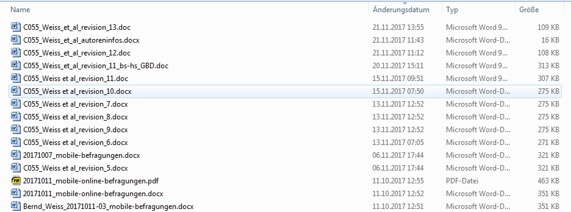

A3: An introduction to Git¶
Bernd Weiß

(Source: xkcd, https://xkcd.com/1597/, accessed on 2017-12-23)
Git live demo¶
Preface¶
A few words on notation
All interactive Git commands in this document start with an exclamation mark like so: !git add In your terminal, though, you have to type in git add without exclamation mark
Initializing folders and files¶
Since we’d like to have a fully reproducible example, everytime this notebook is started everything is created from scratch. First, a test folder for Git is being created.
import os
import shutil
import re
test_folder = "git_test_folder"
test_file_git = "test_file_git"
## If this is the n+1-th run, check if we are already in folder test_folder and then go back to parent folder.
path = os.getcwd()
if "git_test_folder" in path:
os.chdir("..")
## Start always from scratch: if test_folder exists, remove it.
if os.path.exists(test_folder):
!rm -r {test_folder}
## Using shutil.rmtree is unreliable...
## shutil.rmtree(test_folder)
if not os.path.isdir(test_folder):
os.makedirs(test_folder)
import os
test_folder = "git_test_folder"
test_file_git = "test_file_git"
Second, change into git’s test directory and create a new file with a total of four lines of text.
os.chdir(test_folder)
f = open("test.txt", "w")
file_content = "l1: Branch: master\n" \
"l2: Author: BW\n" \
"l3: // Always start with a dumb comment:\n" \
"l4: use my_fancy_data.dta, clear\n" \
"l5: gen v1 = 1\n" \
"l6: gen v2 = v1 + 1\n" \
"l7: mean v1"
f.write(file_content)
f.close()
So, let’s print the content of the test file:
f = open("test.txt", "r")
print(f.read())
f.close()
l1: Branch: master
l2: Author: BW
l3: // Always start with a dumb comment:
l4: use my_fancy_data.dta, clear
l5: gen v1 = 1
l6: gen v2 = v1 + 1
l7: mean v1
I also will create a couple of handy python functions that will make my life much easier:
def replace_text(file, old, new):
f = open(file, "r")
flist = f.read()
f.close()
import re
rep = re.compile(old)
flist = rep.sub(new, flist)
##print flist
f = open(file, "w")
f.write(flist)
f.close()
def remove_line(file, line_number):
f = open(file, "r")
flist = list(f)
f.close()
f = open(file, "w")
## delete n-th line
del flist[line_number - 1] #delete regarding element
for i in flist:
f.write(i)
f.close()
def print_file(file):
f = open(file, "r")
print(f.read())
f.close()
The Concept of Version Control¶
Prerequisits¶
Git and other tools have been developed in the context of software development (in the Linux community, to be more precise)
Even though there exits graphical user interfaces (GUIs) for working with Git, it is highly recommended that you have a basic knowledge of how to use the CLI (see section on Using a comand-line interface (CLI))
Once you mastered using Git at the command line, using a GUI is a peace of cake
Since most of you are working on a MS Windows PC, it is also a good idea to know the meaning of the PATH variable (what it is used for, how to access it and how to modify it).
Why use a Version Control System (VCS)?¶
For backup
For collaborative work (including running into conflicting versions of a file) und syncing
There is always a (the) “most recent” version of a file
Given that there are conflicting versions of (text) files, Git is able to clearly identify these conflicts by displaying the differences of conflicting files (given they are in plain text)
Keeping track of changes (aka, time travel; all changes are tracked and it is quite easy to go back in time). So, even if you invented Skynet (popcultural reference) and mankind is about to being terminated for good, you always can go back in time
And, avoiding the horror of
final_rev2_update12_after-computer-crashed.docx(see http://phdcomics.com/comics.php?f=1531) For having the possibility to test new code/functionalities in a “sandbox” (aka a new branch) (following-up my Skynet reference: create a parallel universe (the branch), do your evil thing and then go back to your reality if you don’t like it, i.e., delete the parallel universe/branch)
While creating a history of changes, you are supposed to provide proper and meaningful messages that describe what has changed. If you do this thouroghly, you have a nice log file of all changes (like a lab notebook)
Authorship attribution
Modern web interfaces such as GitHub also allow for social interaction (strangers can send you pull requests to improve your code/document/…)
For what type of files is a VCS useful?
Most useful for text files (Stata do files, SPSS syntax files, R skripts etc.). Text files can stored very efficient since only changes between version are tracked
Binary files (Blob = binary large object) (images, word files, stata data files, etc.) can be stored in a VCS but less efficient than text files since every time the entire file is saved
Terminology and concepts¶
There is Git.
And, then there are GitHub, GitLab etc., which are (web-based GUI) frontends to make working with Git easier, especially when it comes to collaborative work.
GitHub and GitLab provide the opportunity to setup a remote Git repository.
So, in most cases you will need a local installation of Git.
In addition to being a frontend to Git, GitHub and GitLab also provide project management features and allow to create so-called issues that can be considered file-related todo items. You also can use milestone etc.
One more thing, “Git” is the name of the software, and the actual command-line tool is
git(e.g., in Windows it isgit.exe).
Git: A 30,000 foot view¶
Git is a version control system (VCS). As mentioned above, a VCS allows you to track the history and attribution of your project files over time in a repository [Narębski, 2016]
It is, if you will, a (very, very) powerful undo function (well, kind of…)
To be more precise, Git is a distributed VCS (DCVS) and hence a tool for collaborartive work
If you want to utilize Git for collaborative work, one approach of using Git in this context assumes that there exists a central and remote repository. Most fomous are GitHub, at GESIS we use GitLab
Workflow in Git (given that a Git repository has already be initialized):
Work locally (i.e. on your computer) on your files until a certain feature is completed (a function is completed, a paragraph written etc).
Commit your file and write a commit message, i.e. inform git that a certain file (or more) have changed and inform your future self (or someone else) about the nature of your changes (aka write a commit message). This has to be done manually.
Commit early, commit often!
When a remote repository exists: send (“push”) you changes to the remote repository.

Source: [Healy, 2019], see https://plain-text.co/keep-a-record.html
How I use Git¶
Git is a very powerful tool, in my own work, I utilize a rather limited set of its capabilities
This is what I mostly do with Git:
Initialize a new Git repository or clone an existing respository
Backup my work on a remote server
Track changes
Use branches to implement experimental features
Search (and undo) previous changes (most of the time using the interface provided bv GitHub or GitLab)
“Google” (or whatever your prefered seach engine is) a lot …
Installing Git and setup¶
Download and installation¶
Git (for Windows) can be downloaded from: https://git-scm.com/download/win.
Here are a few questions that you will be asked during the installation:
Default editor (use Notepad++ if you have it on your computed, vim also works)
Adjusting your PATH environment (you might want to go with the second optionn “Use Git from the Windows command Prompt”)
Choosing HTTPS… (go with default: OpenSSL)
In case you will be working with others, you also will need a remote repository (be able to acces a remote respository). For convenience reasons it is recommended that you also install/set up SSH (see next slides).
For various reasons, I no longer use a standalone version of Git but use a version of Git that can be installed via MSYS2. “MSYS2 is a collection of tools and libraries providing you with an easy-to-use environment for building, installing and running native Windows software” (https://www.msys2.org/).
Prepare to access remote repositories¶
Well, not so distributed at all…¶
Even though Git is called “distributed”, most of the time, there is just one central server (e.,g., GitHub, GitLab, …)
A Git project is stored in a repository, which can be local or remote
When using Git to access a remote repository (for backup or collaborative work) on a remote server, you need to authenticate yourself to the server
There are two ways of authentication: HTTPS or SSH
Despite its technical details, I always choose SSH but Johannes, for instance, prefers HTTPS
More information can be found on these websites:
Setting up SSH¶
To work with git on you local computer, you do not need SSH (= Secure Shell). SSH is a network protocol that comes in handy, when you work with remote repositories and when you do not want to type-in your passwort every time you pull (fetch) or push (send) from a remote repository. You still need to authenticate yourself, though.
Authentication in SSH (which is also the name of the program) works by using a private and a public key (usually the public key has the file extension .pub, e.g. my public key is id_rsa.pub). When you start working with SSH for the very first time, you have to create both keys.
The private key remains on your local computer and you have to make sure that it is safe – it is a simple text file and it is your password now, and everyone who has your private key can access your files. Again, everyone who has your private key has your password!
This is what my public key looks like:
ssh-rsa
AAAAB3NzaC1yc2EAAAABIwAAAQEAyOQ9RT6TkfgkdO2NspzdVJE5CZ03yYAhVwLGo
CrI3E9/Ix0MAySunXExjhsQi2XkhPBjLOEahYuuLaAWHuBc7apUPRNSBy+mdUHnH3
0BdTQijQ6vj3RL99HO4yrZnipIlkS5ufw/+hpbXXOzSOqTvyGtL9ygm3eA2HDSQtz
2ptFq8anODJDKrgTbNLb/YZ9KDIcpdO/Sfk4LtvaGF3tIFlyE+pogNmN4eWiYg9Xv
25BhVVxWMHadRFLeDastWO4SedriEHzQYaNgxVNTufqolJ0nbg4R//fVDxjR2SbzV
AHLZ+eVPUx+vzcPVMP9wYPcnii9YLiSRy+hlUAOR/kXeQ== berndweiss
Important
The public key (not the private key!) has to be stored at the GitHub/GitLab/… website. Now, everyone who has your public key can encrypt files (that are sent to you via the internet) but only you (or anyone else who has your private key) can decrypt the files. And, for that reasons you do not have to login everytime you push/pull files from the remote repository.
How to setup SSH on you computer is explained on this website: https://docs.gitlab.com/ce/ssh/README.html (“Generate an SSH key pair”)
The most important point is that
sshis able to find your key pair, i.e., it needs to be located in your HOME folder
If everything works well, you should receive the following friendly welcome message after typing in the command ssh -T git@git.gesis.org:
Welcome to GitLab, [your username]
Basic workflow¶
Setting up a Git repository¶
Usually, there are two ways to set up/obtain a Git repository:
You create a new Git repository, push it to GitHub/GitLab and start collaborating with your colleagues (or only yourself)
You “clone” an existing repository from a remote Git server such as GitHub/GitLab (for more details see section Working with remote repositories)
Creating a local Git repository¶
The first step is to create a Git repository. After the repository has been created, we need to tell git which files will be subject to version control. So, the following git commands will be utilized:
git init: Creates a new folder.git, which contains configuration files and the repository. As of now,gitdoes not know anything about our file(s), e.g.test.txtFrom now on, all examples will refer to a demo repository called
git_test_folder
The content of git_test_folder is
!ls -la
total 9
drwxr-xr-x 1 weissbd Domänen-Benutzer 0 Nov 17 05:21 .
drwxr-xr-x 1 weissbd Domänen-Benutzer 0 Nov 17 05:21 ..
-rw-r--r-- 1 weissbd Domänen-Benutzer 160 Nov 17 05:21 test.txt
And, test.txt contains the following content:
!cat test.txt
l1: Branch: master
l2: Author: BW
l3: // Always start with a dumb comment:
l4: use my_fancy_data.dta, clear
l5: gen v1 = 1
l6: gen v2 = v1 + 1
l7: mean v1
Now, let’s initialize the Git repository using the git init command.
!git init
Initialized empty Git repository in /e/syncwork/projects/confer/ps2021-10-ws-repro-research/src/bw/git_test_folder/.git/
The status of a repository (git status)¶
Before we start doing anything, let’s check the status of our newly created repository using the command git status. It shows the status of the currect working tree, the main one is called master. As of now, git is not aware of any files yet, so it informs us about the existance of ‘Untracked files: …’.
!git status
On branch main
No commits yet
Untracked files:
(use "git add <file>..." to include in what will be committed)
test.txt
nothing added to commit but untracked files present (use "git add" to track)
Adding files to a git repository: git add and git commit¶
Now it is time for some file action by adding (a) file(s) to our repository.
In the previous section on git status it was recommended that git add is used to add files to the git repository:
(use "git add <file>..." to include in what will be committed)
That is what we are going to do now: To actually ‘save’ (check-in or track) files in the repository, a two-step procedure needs to be performed.
The first step is to call git add, the second step is to commit the file(s) using git commit. For now, it might be hard to see the benefit of this two-step procedure, see http://gitolite.com/uses-of-index.html for a thorough description.
git add -A: Adds (here ´-A´ means “all files”) files to the index (or staging area).To add a particilar files to the index, use
git add my_special_file.do.
!git add -A
!git status
On branch main
No commits yet
Changes to be committed:
(use "git rm --cached <file>..." to unstage)
new file: test.txt
The second step is to run the command git commit -m "your text, verbs in imperative form" (see below), e.g. git commit -m "add function to compute tau^2". Since this is my first commit, I always apply the following commit message: git commit -m "initial commit.
According to https://git.kernel.org/pub/scm/git/git.git/tree/Documentation/SubmittingPatches?id=HEAD#n133 commit messages should follow the “imperative-style”:
“Describe your changes in imperative mood, e.g. “make xyzzy do frotz” instead of “[This patch] makes xyzzy do frotz” or “[I] changed xyzzy to do frotz”, as if you are giving orders to the codebase to change its behavior. Try to make sure your explanation can be understood without external resources. Instead of giving a URL to a mailing list archive, summarize the relevant points of the discussion.”
!git commit -m "Initial commit"
[main (root-commit) 12b9483] Initial commit
1 file changed, 7 insertions(+)
create mode 100644 test.txt
Again, let’s see what git status reports:
!git status
On branch main
nothing to commit, working tree clean
So, there are no untracked files, that is, “nothing to commit, working directory clean”.
Viewing Git’s commit history: git log¶
There is another useful command git log that informs about git’s history, i.e. commited files and folders:
!git log
commit 12b9483953c67438aa087586c82b7ba17d02975d
Author: Bernd Weiss <spam@metaanalyse.de>
Date: Wed Nov 17 05:21:12 2021 +0100
Initial commit
Right now, the history only contains one entry. The very first line commit ... shows the SHA1 hash. The ‘Secure Hash Algorithm 1’ is used to calculate this long, hexadecimal number for a file. Files with identical content are representet by an identical SHA1 hash, files with different content do not share an identical SHA1 hash. Using these SHA1 numbers, git can identify changes in a file.
Let’s start changing the content of text.txt. For instance, remove line 3 (// Always start with a dumb comment:). First, let’s print the original file content again:
print_file("test.txt")
l1: Branch: master
l2: Author: BW
l3: // Always start with a dumb comment:
l4: use my_fancy_data.dta, clear
l5: gen v1 = 1
l6: gen v2 = v1 + 1
l7: mean v1
Here is some Python code that removes the comment line.
remove_line("test.txt", 3)
Print out the new code file (remember, the comment line has been removed).
f = open("test.txt", "r")
print(f.read())
f.close()
l1: Branch: master
l2: Author: BW
l4: use my_fancy_data.dta, clear
l5: gen v1 = 1
l6: gen v2 = v1 + 1
l7: mean v1
Again, let’s check git status to see what our repository is doing and what has changed…
!git status
On branch main
Changes not staged for commit:
(use "git add <file>..." to update what will be committed)
(use "git restore <file>..." to discard changes in working directory)
modified: test.txt
no changes added to commit (use "git add" and/or "git commit -a")
Exercise¶
Open your Git Bash
Go to your Home directory via
cd ~(or, actually, go wherever you want)Create a new folder (either via
mkdirorcreate-project.sh)Change into the newly created directory via
<your input here>Initialize your new Git project via
git initCopy a few files (PDF files etc. – does not really matter, but no sensitive material!) in your new project folder
What comes next? Hint:
git addand thengit commit <your input>Check the status and the history of your Git repository
PLEASE do not delete the repository, we will need it for a later exercise!
Undo changes / Going back in Git’s history¶
Undoing changes can be done utilizing three different approaches (
git checkout,git revert,git reset)Depends on the state of your working directory (clean or uncommitted changes)
A pragmatic approach is to utilize the search funtionalities of a web platform such as GitHub or GitLab
Here, only some basics will be introduced, further information is provided by https://www.atlassian.com/git/tutorials/undoing-changes or https://git-scm.com/book/en/v2/Git-Basics-Undoing-Things
git checkout¶
In order to undo (a) uncommitted changes or (b) going back to an earlier commit, respectively, the command
git checkoutcan be utilizedYou have multiple possibilities to undo changes. You can undo changes regarding a particular file or you can go back to an earlier commit, which may contain multiple changes (not a good practice, though)
git checkout -- myfilewill discard all changes with respect tomyfilegit checkout -- .(or usegit restore .) will discard all changes in your working directory, which can include multiple files (remember the dot., see section Working directory and relative paths)
Now, let’s discard all (uncommitted) changes that we made to file
text.txtand recover the lost line 3:
!git status
On branch main
Changes not staged for commit:
(use "git add <file>..." to update what will be committed)
(use "git restore <file>..." to discard changes in working directory)
modified: test.txt
no changes added to commit (use "git add" and/or "git commit -a")
# Check again the content of test.txt; line 3 should be missing.
!cat test.txt
l1: Branch: master
l2: Author: BW
l4: use my_fancy_data.dta, clear
l5: gen v1 = 1
l6: gen v2 = v1 + 1
l7: mean v1
!git checkout -- test.txt
Voilà, our beloved comment (line 3) has been risen from the dead…
print_file("test.txt")
l1: Branch: master
l2: Author: BW
l3: // Always start with a dumb comment:
l4: use my_fancy_data.dta, clear
l5: gen v1 = 1
l6: gen v2 = v1 + 1
l7: mean v1
For more information see https://www.atlassian.com/git/tutorials/using-branches/git-checkout
git revert¶
Put simply: git revert can undo a certain commit
For more information see https://www.atlassian.com/git/tutorials/undoing-changes/git-revert
git reset¶
Put simply: git reset goes back to a certain commit and discards all later commits
For more information see https://www.atlassian.com/git/tutorials/undoing-changes/git-reset
What has changed at the file level? git show and git diff¶
In this chapter we will learn about git show and git diff, which show differences at the file level. However, for those of you who do not feel comfortable using the command line I highly recommend meld (http://meldmerge.org/).
So far, we have only a few commits. git log shows all commits, the SHA1 hash and the respective commit message.
!git log
commit 421c480c05cf1d5d233c3728f60b1672303164f1
Author: Bernd Weiss <spam@metaanalyse.de>
Date: Wed Nov 17 05:21:14 2021 +0100
add new comment (M2)
commit ea3dd7685c8f1de5cab96fddaba4e003f1db29d0
Author: Bernd Weiss <spam@metaanalyse.de>
Date: Wed Nov 17 05:21:13 2021 +0100
add new line (M1)
commit 12b9483953c67438aa087586c82b7ba17d02975d
Author: Bernd Weiss <spam@metaanalyse.de>
Date: Wed Nov 17 05:21:12 2021 +0100
Initial commit
A brief intro to the unified diff format¶
Using git show without any additional arguments shows the differences between the last commit and HEAD. The output follows the so called “unified diff format” (UDF). A good introduction of UDF ist provided by https://www.gnu.org/software/diffutils/manual/html_node/Detailed-Unified.html#Detailed-Unified. The following is mostly copy-and-paste from the aforementioned source. It is also imported to note that UDF utilizes so-called (c)hunks to describe changes. A hunk is a paragraph separated by an empty line.
git show¶
!git show
commit 421c480c05cf1d5d233c3728f60b1672303164f1
Author: Bernd Weiss <spam@metaanalyse.de>
Date: Wed Nov 17 05:21:14 2021 +0100
add new comment (M2)
diff --git a/test.txt b/test.txt
index ed73d1e..32af706 100644
--- a/test.txt
+++ b/test.txt
@@ -5,4 +5,5 @@ l3: // Always start with a dumb comment:
l4: use my_fancy_data.dta, clear
l5: gen v1 = 1
l6: gen v2 = v1 + 1
-l7: mean v1
\ No newline at end of file
+l7: // M2: A new comment.
+mean v1
\ No newline at end of file
Frankly, I go to GitHub or GitLab and check the respective differences between files…

Branching¶
In addition to being a powerful undo function, git also allows you to “toy around” with different “versions” of your text or code
Let’s assume that you wrote a first draft of a Stata program (macro). Everything works as expected. From a programming perspective, though, the program is just ugly and it is therefore quite hard to add additional functionalities.
What I used to do was: save my original file as
my-great-program.doand start working on a new version of the program using a file calledmy-great-program_new.doThis is not necessary with
git branch
Let’s start with a list of files that are currently in my project folder:
!ls -la
total 13
drwxr-xr-x 1 weissbd Domänen-Benutzer 0 Nov 17 05:21 .
drwxr-xr-x 1 weissbd Domänen-Benutzer 0 Nov 17 05:21 ..
drwxr-xr-x 1 weissbd Domänen-Benutzer 0 Nov 17 05:21 .git
-rw-r--r-- 1 weissbd Domänen-Benutzer 203 Nov 17 05:21 test.txt
!git status
On branch main
nothing to commit, working tree clean
What branches are available? Once we have more than one branch, the * shows which branch is active (or: in wich branch we are in)
!git branch
* main
Create a new branch called testing
!git branch testing
!git branch
* main
testing
How do we get into the testing branch? Use git checkout testing
!git checkout testing
!git branch
Switched to branch 'testing'
main
* testing
Create a new file testingfile
!touch testingfile
!echo "in testing" > testingfile
!ls -la
total 14
drwxr-xr-x 1 weissbd Domänen-Benutzer 0 Nov 17 05:21 .
drwxr-xr-x 1 weissbd Domänen-Benutzer 0 Nov 17 05:21 ..
drwxr-xr-x 1 weissbd Domänen-Benutzer 0 Nov 17 05:21 .git
-rw-r--r-- 1 weissbd Domänen-Benutzer 203 Nov 17 05:21 test.txt
-rw-r--r-- 1 weissbd Domänen-Benutzer 15 Nov 17 05:21 testingfile
!cat testingfile
"in testing"
!git add testingfile
!git commit -m "new branch testing"
[testing d21b859] new branch testing
1 file changed, 1 insertion(+)
create mode 100644 testingfile
Switch back to branch main (and cat testingfile should result in an error message, since there is no testingfile in branch main)
!git checkout main
!cat testingfile
Switched to branch 'main'
cat: testingfile: No such file or directory
Now, we can use merge to combine main and testing
!git merge testing
Updating 421c480..d21b859
Fast-forward
testingfile | 1 +
1 file changed, 1 insertion(+)
create mode 100644 testingfile
!ls -la
total 14
drwxr-xr-x 1 weissbd Domänen-Benutzer 0 Nov 17 05:21 .
drwxr-xr-x 1 weissbd Domänen-Benutzer 0 Nov 17 05:21 ..
drwxr-xr-x 1 weissbd Domänen-Benutzer 0 Nov 17 05:21 .git
-rw-r--r-- 1 weissbd Domänen-Benutzer 203 Nov 17 05:21 test.txt
-rw-r--r-- 1 weissbd Domänen-Benutzer 15 Nov 17 05:21 testingfile
!cat testingfile
"in testing"
Working with remote repositories¶
As mentioned in the introduction, git is especially powerful when it comes to collaborative work. In order to work with others, you need some sort of connetion to these other person(s). The one I am discussing here is having a central repository C. Let us assume that you (x) have two other collaborators y and z. Then x (that’s you), as well as y and z need to synchronise with the same repository C. There also exists another model which is based on a decentralized approach, where you could indivdually sync with x-y, x-z, y-z etc.
Establishing a connection to a remote repository¶
There are two ways to establish a connection to a remote repository:
Clone a remote repository via
git clone ....Setting up a new remote repository via
git remote add <name> <url>.
Cloning a remote repository¶
Cloning a remote repository via GitHub/GitLab/… is quite easy
Visit the website, on GitHub look for the green “Code” button, see also screenshot below
Decide wether you would like to use the HTTPS or SSH protocoll
Copy the link and execute
git cloneHere is an example using my workshop on “Meta-Analysis in Social Research”, see https://github.com/berndweiss/dji-meta-analysis-2019
Open a CLI and execute
git clone git@github.com:berndweiss/dji-meta-analysis-2019.git

!cd
E:\syncwork\projects\confer\ps2021-10-ws-repro-research\src\bw\git_test_folder
Adding a remote repository via git remote add ...¶
Using the git command git remote add <name> <url>. The usual name for <name> is origin, however, feel free to choose another name. The <url> for this repository looks like git@git.gesis.org:weissbd/ps2017-xx-intro2git.git; another example is this one: git@github.com:berndweiss/ps2017-11_porto-campbell-ma-workshop.git. The url can be found in the respective github/gitlab repository.
The most convenient way in working with remove respositories is using SSH. In order to utilize SSH, the remote url has to be start with git@git....
It is also possible to use the HTTPS protocol. In these cases the urls look like so https://example.com/path/to/repo.git.
Delete remote branch¶
git push <remote_name> --delete <branch_name>, e.g. git push origin --delete my_branch
Dowloading a remote branch that is not on your computer (yet)¶
Just run a simple git pull (see https://stackoverflow.com/a/2294385). Then, on your local repository checkout to that remote branch, e.g. git checkput indepday:
Switched to a new branch 'indepday'
Branch 'indepday' set up to track remote branch 'indepday' from 'origin'.
After checkout to indepday, git automatically starts tracking the new branch.
Exercise¶
Start the Git Bash
Clone the respository of my workshop https://github.com/berndweiss/dji-meta-analysis-2019
Change into the newly created directory
List the Git history via
<your input --oneline>(the--onelineis very handy) and determine the first 7 SHA1 digits
Setting up a Git repository locally and remotly¶
Exercise¶
In a previous exercise (see Exercise), you have created your own repository (let’s call it
your-new-repo)Now, go to your GitHub account and create a new repository on GitHub
Startpage -> tab “Repositories” -> green button “New”
Enter a new “Repository name”
Make it “Private” (unless you have something important to share)
Do not check any of the “Initialize this repository with” boxes
Hit the green “Create repository” button
Choose SSH or HTTPS as protocol (“Quick setup — if you’ve done this kind of thing before”)
Look for “…or push an existing repository from the command line”
SSH:
Copy the line
git remote add origin git@github.com:berndweiss/your-repo-name.gitExecute the command
git remote add origin git@github.com:berndweiss/your-repo-name.gitin the Git Bash in your local repository (your-new-repo)
HTTPS:
Copy the line
git remote add origin https://github.com/berndweiss/your-repo-name.gitExecute the command
git remote add origin https://github.com/berndweiss/your-repo-name.gitin the Git Bash in your local repository (your-new-repo)
Make sure that
git statusshows a clean repositoryNow you can run your first
git push origin mainReload the GitHub page via F5; you now should see the content of your local repo
your-new-repo…
You can delete a GitHub repository via the tab “Settings” -> “Options”, then scroll down -> “Danger Zone” -> “Delete this repository”
There is much more…¶
Commit hygiene http://www.ericbmerritt.com/2011/09/21/commit-hygiene-and-git.html
.gitconfig.gitignore…
A nice tutorial in German: “git - Der einfache Einstieg, eine einfache Anleitung, um git zu lernen. Kein Schnick-Schnack ;) https://rogerdudler.github.io/git-guide/index.de.html
References¶
- AR21
Jesse M. Alston and Jessica A. Rick. A Beginner's Guide to Conducting Reproducible Research. The Bulletin of the Ecological Society of America, April 2021. doi:10.1002/bes2.1801.
- Bar18
Lorena A. Barba. Terminologies for Reproducible Research. arXiv:1802.03311 [cs], February 2018. arXiv:1802.03311.
- BD95
Jonathan B. Buckheit and David L. Donoho. WaveLab and Reproducible Research. In Anestis Antoniadis, Georges Oppenheim, P. Bickel, P. Diggle, S. Fienberg, K. Krickeberg, I. Olkin, N. Wermuth, and S. Zeger, editors, Wavelets and Statistics, volume 103 of Lecture Notes in Statistics, pages 55–81. Springer New York, New York, NY, 1995. doi:10.1007/978-1-4612-2544-7.
- Div18
Patrick Divine. String Case Styles: camel, Pascal, Snake, and Kebab Case. https://betterprogramming.pub/string-case-styles-camel-pascal-snake-and-kebab-case-981407998841, 2018.
- Fit12
Michael Fitzgerald. Introducing Regular Expressions. O'Reilly, Beijing, Köln, 1. ed edition, 2012. ISBN 978-1-4493-9268-0.
- For17
Tiago Forte. The PARA Method: a Universal System for Organizing Digital Information. https://fortelabs.co/blog/para/, February 2017.
- FP17
Jeremy Freese and David Peterson. Replication in Social Science. Annual Review of Sociology, 43(1):147–165, July 2017. doi:10.1146/annurev-soc-060116-053450.
- GFI16
Steven N. Goodman, Daniele Fanelli, and John P. A. Ioannidis. What does research reproducibility mean? Science Translational Medicine, 8(341):341ps12–341ps12, June 2016. doi:10.1126/scitranslmed.aaf5027.
- Hea19
Kieran Healy. The Plain Person's Guide to Plain Text Social Science. https://plain-text.co/, October 2019.
- Lee14
Thomas J. Leeper. Reproducible Research:what, Why, and How? 2014.
- Narkebski16
Jakub Narębski. Mastering Git: Attain Expert-Level Proficiency with Git for Enhanced Productivity and Efficient Collaboration by Mastering Advanced Distributed Version Control Features. Packt Publishing, Birmingham, 2016. ISBN 978-1-78355-375-4.
- Pen11
Roger D. Peng. Reproducible Research in Computational Science. Science, 334(6060):1226–1227, February 2011. doi:10.1126/science.1213847.
- PF16
Stephen R. Piccolo and Michael B. Frampton. Tools and techniques for computational reproducibility. GigaScience, 5(1):30, December 2016. doi:10.1186/s13742-016-0135-4.
- SWeiss20
Ines Schaurer and Bernd Weiß. Investigating selection bias of online surveys on coronavirus-related behavioral outcomes: an example utilizing the GESIS Panel Special Survey on the Coronavirus SARS-CoV-2 Outbreak in Germany. Survey Research Methods, 2(14):103–108, June 2020. doi:10.18148/SRM/2020.V14I2.7751.
- SLP14
Victoria Stodden, Friedrich Leisch, and Roger D. Peng. Implementing Reproducible Research. CRC Press, Boca Raton, 2014.